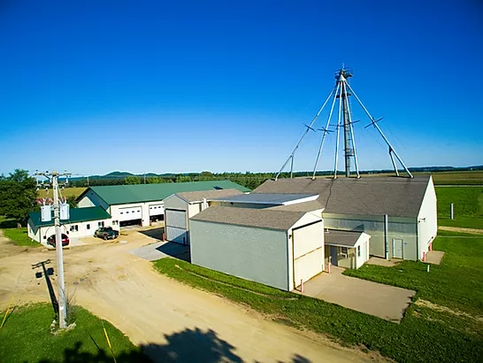
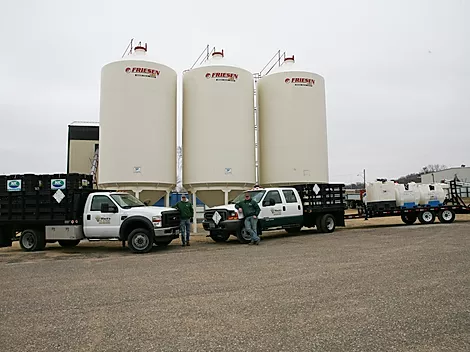
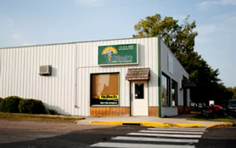

Black's Valley Ag is a western Wisconsin family-owned business with a motto of "People working for People." We strive to provide the best agricultural, lawn and garden products and services to our customers. We believe this motto has allowed our business to grow and better serve our customers. Since our inception in 1990, we have grown to become not only an agriculture store, but also a fertilizer distributor and bulk soybean distributor. We currently offer a depth of expert services, products, and equipment - all backed by our certified and knowledgeable staff.